5020A24 heater box - dismantle and rebuild at bench
- Path
- Procedures > 50 AUXILIARY UNITS > 5020 HEATER > 5020A box and components > 5020A24 heater box - dismantle and rebuild at bench
- Kind
- repair procedure (removal / refitting; the operation number is the code)
- Applies to
- all engines; all production periods
- Interactive page
- https://sloeber94.github.io/elrnDB-fPnd/en/#/2752865
Applies to: all engines; all production periods
 Removing
Removing
 Refitting
Refitting1. Undo retaining bolts
2. Release the clip.
3. Rotate it in a clockwise direction and remove the heater fan motor.
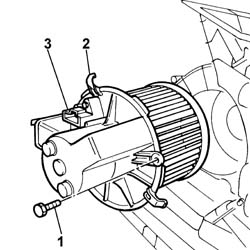
Applies to: all engines; all production periods
1. Remove the sound insulation seal.
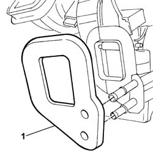
Applies to: all engines; all production periods
1. Undo the retaining bolts.
2. Remove the pipe shield.
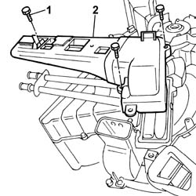
Applies to: all engines; all production periods
1. Release the fastening clips on the heater casing and remove the radiator (1a) complete with water supply and return pipes (1b).
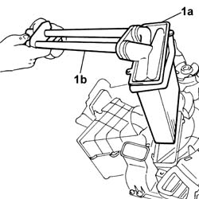
Applies to: all engines; all production periods
1. Undo retaining bolts
2. Separate the water supply and return pipes (2a) from the radiator (2b).
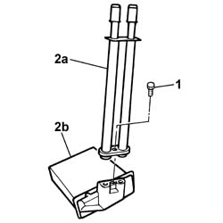
Applies to: all engines; all production periods
1. Undo the retaining bolts.
2. Remove the left air duct.
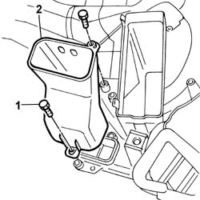
Applies to: all engines; all production periods
1. Undo the retaining bolts.
2. Remove the lower air ducts.
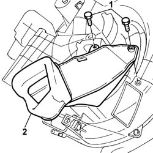
Applies to: all engines; all production periods
1. Release the fastening clip.
2. Release the timing transmission cable from the timing drive gear and remove it.
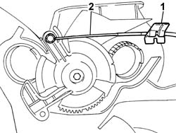
Applies to: all engines; all production periods
1. Undo retaining bolts
2. Remove the timing drive gear.
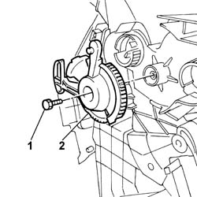
Applies to: all engines; all production periods
1. Release the fastening clip.
2. Release the mixture control cable from the mixture control lever and remove it.
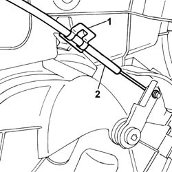
Applies to: all engines; all production periods
1. Release the fastening clip and remove the mixture control lever.
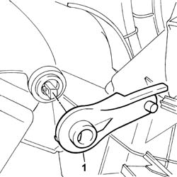
Applies to: all engines; all production periods
1. Release the fastening clip.
2. Release the air intake and recirculation control cable from the air intake and recirculation control lever and remove it.
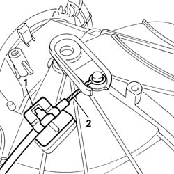
Applies to: all engines; all production periods
1. Undo retaining bolts
2. Release the spring.
3. Rotate the ventilation/air intake and recirculation assembly in a clockwise direction and remove it.
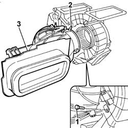
Applies to: all engines; all production periods
1. Undo the retaining bolts.
2. Separate the two halves of the casing (2a) and (2b).
3. Remove the air mixture flap.
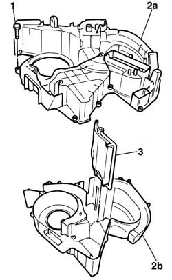
Applies to: all engines; all production periods
1. Work on the fastening tabs (1a) and (1b) and remove the air distribution flaps (1c) and (1d).
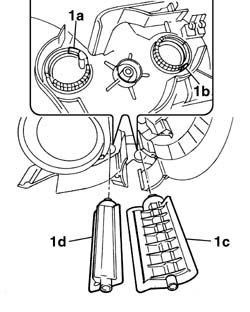
Applies to: all engines; all production periods
Refitting
RemovingPosition the air distribution flaps and check that they are secure.
Place the air mixture flap inside the half casings.
Tighten the bolts fixing the half casings.
Position the ventilation / air intake and recirculation unit, turn it in an anti-clockwise direction and check that it is secure.
Tighten the retaining bolt.
Secure the air intake and recirculation transmission cable to the air intake and recirculation control lever and attach the fastening clip.
Position the mixture control lever and check that it is secure.
Secure the mixture control cable to the mixture control lever and attach the fastening clip.
1. Position the timing drive gear (1a) ensuring that the references (1b) and (1c) are aligned with the references on the timing flap gears (1d) and (1e).
2. Tighten the retaining bolt.
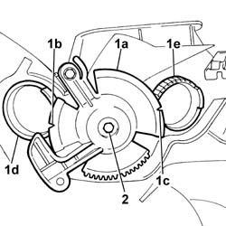
Applies to: all engines; all production periods
Secure the timing control cable to the timing drive gear and attach the fastening clip.
Position the lower air ducts and tighten the fixing bolts.
Position the left side air duct and tighten the fixing bolts.
Check the condition of the water supply and return pipe seals and, if necessary, replace them.
Position the water supply and return pipes on the radiator.
Place the nut inside the housing on the radiator.
Tighten the retaining bolt.
Check the condition of the radiato seal and, if necessary, replace it.
Position the radiator complete with water supply and return pipes and check that it is secure.
Position the pipe shield and tighten the fixing bolts.
Check the condition of the sound insulation seal and, if necessary, replace it.
Position the sound insulation seal.
Position the heater fan motor, turn it in an anti-clockwise direction and check that it is secure.
Tighten the retaining bolt.